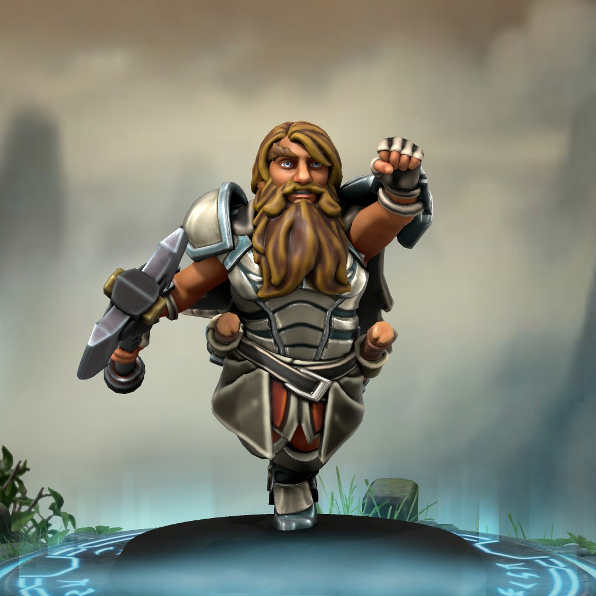
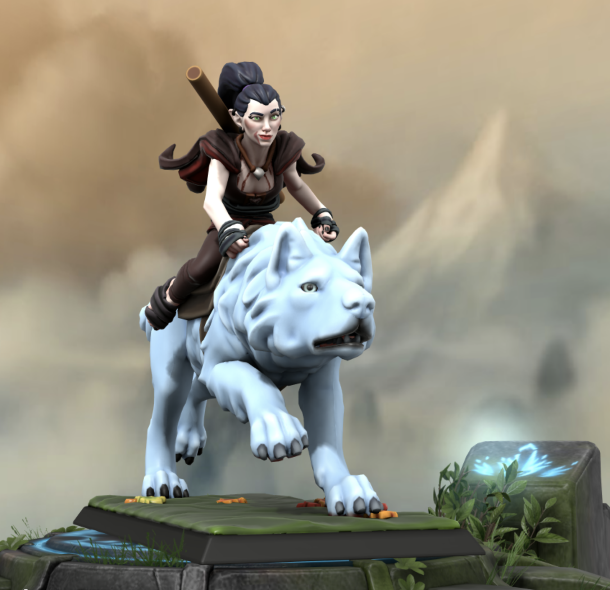
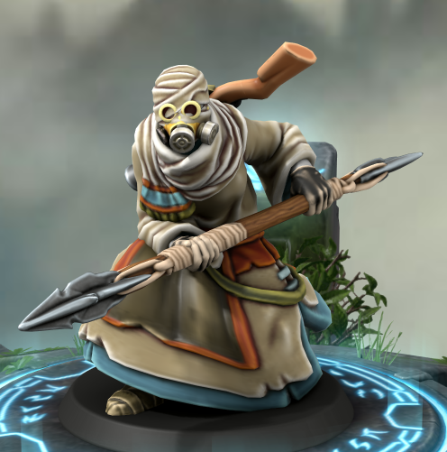
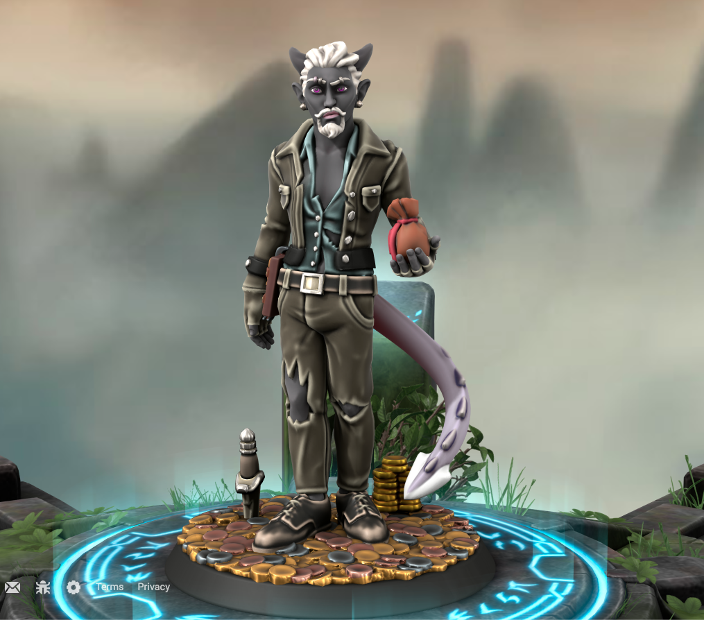

Brock Blackstar
Dwaf Sorcerer
Good day fellow travelers, I am Brock. I am a mountain dwarf with some, special attributes I guess, I'm not entirely sure. I've lived alone for around 90 years now I think, which would put me around 120 years old. I mainly tend to my goats and sheep while tinkering with different little projects and practicing my earth magic. I left my family a few years back to save them from disgrace and alienation from the tribe all because of my, special skills. They weren't to kind finding out I have earth magic, so I figured it's best for them that I leave. I've lived with this ability long enough, I'm ready to find out why I was cursed or blessed with this magic. Im ready to find out what I am and why.
Ayla
Elf Druid
Raised by Wolves. I owe the Goddess of the Moon my life. I'm a pacifist and vegetarian, I only hunt for my pack. Just don't cross me and we'll be fine. Also I like my personal space - respect my boundaries or you'll be left waving your arms around trying to clutch at your missing hands... Bunnies are cute.
Voxre Rarc
Asaltante Berserker
Coming from the
Asaltante Tribes, a group of native people of the planet Roca. Roca is a desert planet that was once lush with large oceans. The United Viceroyalties of Corona Esrellas settled in the aftermath of the devastated planet centuries later. The Asaltante and the Corona Estrellas Settlers had many conflicts. This labeled Voxre and her people as savages to the settlers.
She differed from her tribe. While many in her tribe resented the Corona Estrellas Settlers, Voxre accepted and often traded with them
Vandolein
Tiefling Rouge
Ok look, shiny!
Haunted by unidentified ghosts, Vandolein rejects law and authority.